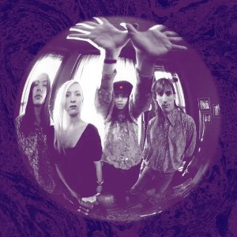
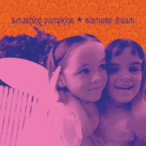
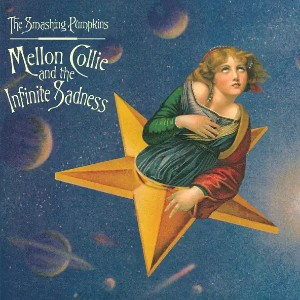

Gish

Gish is the debut studio album by The Smashing Pumpkins and marks the beginning of their rise in the alternative rock scene of the early 1990s. Recorded in Madison, Wisconsin, and produced by Butch Vig (who would later work on Nirvana's Nevermind), Gish showcased the band's unique sound—a fusion of heavy guitars, psychedelic textures, and emotional depth.
Though it wasn't an immediate commercial success, Gish became the highest-selling independent album of the year and helped the band build a dedicated underground following. Its dynamic blend of dream pop, hard rock, and shoegaze influences set the stage for their later breakthrough.
Rhinoceros
“Rhinoceros” is a dreamy, slow-burning track from The Smashing Pumpkins' debut album Gish (1991). Blending soft, hypnotic verses with bursts of heavy, distorted guitar, the song showcases the band's early mastery of dynamics and mood. With its swirling layers, emotional depth, and cryptic lyrics, “Rhinoceros” became a fan favorite and a signature example of the Pumpkins' unique mix of psychedelic rock and grunge.
Siva
Known for its explosive guitar riffs, shifting tempos, and spiritual undertones, the song captures the raw energy and dynamic sound that defined the band's early style. With a mix of heavy distortion and melodic interludes, “Siva” helped establish The Smashing Pumpkins as a major force in the alternative rock scene.
I am One
Driven by a powerful, chugging guitar riff and urgent drumming, the song introduces the band's blend of aggressive alt-rock and introspective themes. Lyrically, it explores identity and isolation, with Billy Corgan’s vocals shifting between controlled intensity and explosive emotion. “I Am One” set the tone for the band's early sound and energy.
Siamese Dream

Siamese Dream is the second studio album by The Smashing Pumpkins and a landmark release in 1990s alternative rock. Following the underground success of their debut Gish, the band returned with an ambitious and emotionally charged album that helped catapult them into mainstream success.
The recording process was famously intense. Billy Corgan, struggling with depression and perfectionism, took control of much of the instrumentation—reportedly re-recording many of the guitar and bass parts himself. Despite internal band tensions, the result was a dense, layered album that fused grunge, psychedelia, shoegaze, and progressive rock into a unique sound.
Cherub Rock
Featuring a signature fuzzy guitar intro and explosive dynamics, the song delivers a critique of the music industry and questions notions of authenticity and fame. With its anthemic sound and layered production, “Cherub Rock” became one of the band's defining songs and a staple of '90s alternative rock.
Today
With its bright, jangly guitar riff and upbeat melody, the song contrasts sharply with its dark lyrical content, which reflects themes of despair and emotional numbness. This juxtaposition became a hallmark of the band's style, and “Today” played a major role in bringing them mainstream success.
Disarm
Featuring lush orchestration and soft, haunting vocals, the song explores themes of childhood trauma, emotional pain, and self-reflection. Its poignant lyrics and orchestral arrangement set it apart from the band's heavier tracks, making "Disarm" one of their most memorable and critically acclaimed songs.
Mellon Collie and the Infinite Sadness

Mellon Collie and the Infinite Sadness is a double album—and a sprawling musical statement—by The Smashing Pumpkins, released at the height of their fame in 1995. Spanning 28 tracks across two discs (titled Dawn to Dusk and Twilight to Starlight), the album blends elements of alternative rock, orchestral pop, metal, punk, and dream pop into a deeply emotional and musically diverse experience.
Thematically, the album explores youth, mortality, love, despair, and rebirth. Billy Corgan envisioned it as the "The Wall for Generation X," and its grand scope and ambition earned both critical praise and commercial success.
Bullet with Butterfly Wings
Known for its aggressive guitar riffs and the iconic line "The world is a vampire," the song captures a sense of frustration, disillusionment, and defiance. Its heavy, dynamic sound and raw energy became a defining anthem of the 1990s alternative rock scene.
1979
With its dreamy, mellow vibe and reflective lyrics, the song captures the feeling of youthful innocence, fleeting moments, and the bittersweet passage of time. Its catchy, laid-back rhythm and emotive tone made "1979" one of the band's most beloved tracks and a standout in their discography.
Tonight, Tonight
The song is marked by its lush string arrangements, soaring melodies, and emotionally charged lyrics, which express themes of hope, struggle, and the desire for transcendence. The powerful music video, featuring surreal, cinematic imagery, helped make "Tonight, Tonight" one of the band's most iconic and critically acclaimed tracks.